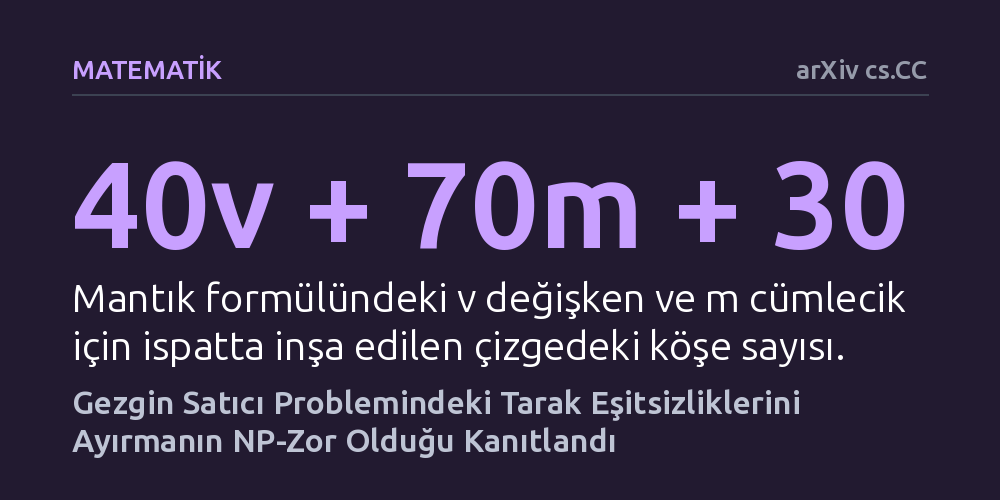

MATEMATIK · arXiv cs.CC · 2026-10-09
Araştırmacılar, gezgin satıcı probleminin çözümünde kritik rol oynayan tarak eşitsizliklerinin ihlal edilip edilmediğini tam olarak tespit etmenin hesaplama karmaşıklığını araştırdı. Mantıksal bir indirgeme yöntemiyle, bu ayırma probleminin NP-zor olduğu ve hızlı bir kesin çözümünün bulunmadığı kanıtlandı.
Çokkesitli kombinatorikte uzun süredir açık duran bu sorunun çözülmesi, gezgin satıcı rotalarını kusursuz ve hızlı biçimde daraltacak evrensel bir tarak algoritması arayışının neden sonuç vermeyeceğini açıklar.

Gezgin satıcı problemi, bir dağıtımcının veya gezginin birden çok şehri en kısa toplam mesafeyle sadece birer kez ziyaret edip başladığı yere dönmesini hedefler. Görünüşte basit olan bu rota bulma görevi, şehir sayısı arttıkça olası kombinasyonların devasa biçimde büyümesi nedeniyle bilgisayar biliminin en zorlu problemlerinden biridir. Araştırmacılar bu sorunu çözmek için rotaları geometrik çokyüzlüler olarak modeller ve olası olmayan rotaları dışarıda bırakan kesme düzlemleri kullanır.
Bu kesme düzlemlerinin en önemlilerinden biri tarak eşitsizlikleridir. Bu eşitsizlikler bir 'sap' ve ona bağlı 'dişler' kümesiyle geçersiz çözümleri eleyerek arama alanını daraltır. Ancak bir rota önerisinin bu tarak kuralını çiğneyip çiğnemediğini, yani eşitsizliğin ihlal edilip edilmediğini bilgisayarla hızlıca bulmanın mümkün olup olmadığı çokkesitli kombinatorikte yıllardır açık bir soru olarak duruyordu.
Yazarlar bu soruyu yanıtlamak için bilgisayar biliminin temel ispat araçlarından biri olan indirgeme yöntemini kullandı. Çözümünün zorluğu kanıtlanmış klasik bir mantık problemi olan 3-SAT, tarak eşitsizliklerini ayırma problemine dönüştürülebildiğinde, tarak ayırma probleminin de en az onun kadar zor olduğu matematiksel olarak kesinleşir.
Araştırmacılar, mantıksal değişkenleri ve kuralları temsil etmek için özel çizge bileşenleri tasarladı. Altı köşeli merdiven düzenekleriyle mantıksal bağıntıları kodladılar ve kübik çizge parçalarıyla değişkenlerin tutarlılığını sağladılar. Sonuç olarak mantıksal formüldeki değişken ve cümlecik sayılarına bağlı olarak köşeler içeren somut bir çizge modeli kurarak mantıksal bir formülün çözülebilirliğini tarak eşitsizliğinin ihlaline bağladılar.
Elde edilen matematiksel ispat, verilen bir çözümün tarak eşitsizliğini ihlal edip etmediğine karar vermenin NP-tam, ihlal eden tarağı bulma probleminin ise NP-zor olduğunu kesinleştirdi. Üstelik bu zorluk, çizge üzerindeki kenar değerleri sadece sıfır, bir bölü iki veya bir gibi basit kesirlerle sınırlandığında ve düğüm dereceleri en fazla dört olduğunda dahi geçerliliğini korumaktadır.
Ayrıca çalışma, izin verilen dişlerin sadece iki veya dört köşeden oluştuğu ve dişin yarısının sap içinde kaldığı çok kısıtlı ve sade geometrik durumlarda dahi problemin zor kalmaya devam ettiğini ortaya koydu. Bu durum, arama uzayını basitleştirmeye yönelik geometrik kısıtlamaların dahi hesaplama zorluğunu ortadan kaldırmadığını gösterdi.
Bu bulgu, lojistikten çip tasarımına kadar birçok alanda kullanılan gezgin satıcı algoritmaları için kuramsal sınırlara işaret eder. Tarak eşitsizliklerini her zaman hızlı ve kusursuz biçimde tespit edecek genel bir kesin algoritma geliştirmek teorik olarak mümkün değildir; bu nedenle araştırmacılar yaklaşık çözümler üreten sezgisel yöntemlere yönelmek durumundadır.
Bununla birlikte yazarlar önemli bir noktanın altını çizmektedir: Tarak eşitsizliklerini ayırmanın zor olması, bu zorluğun daha geniş veya farklı kesme düzlemi ailelerine otomatik olarak aktarılabileceği anlamına gelmez. Sonuç, kesin ayırma mekanizmalarının sınırlarını netleştirirken, pratik yaklaşıklama stratejilerinin geliştirilmesine sağlam bir teorik zemin sunmaktadır.